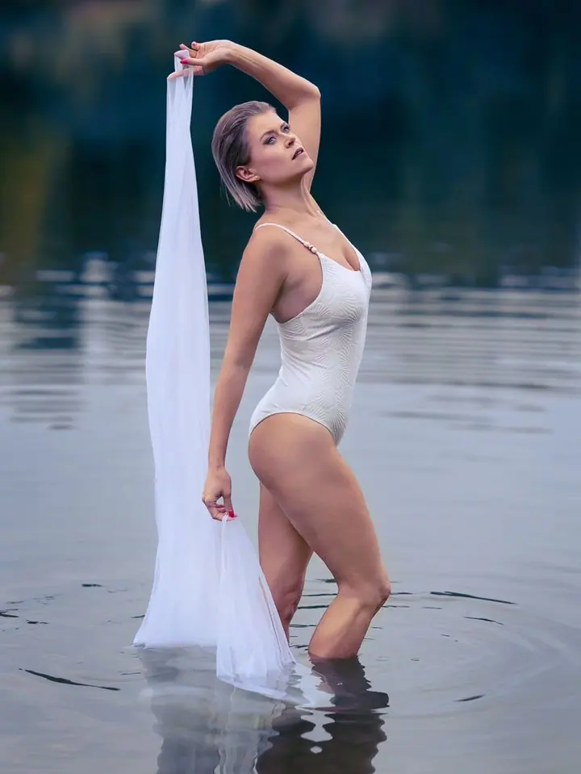
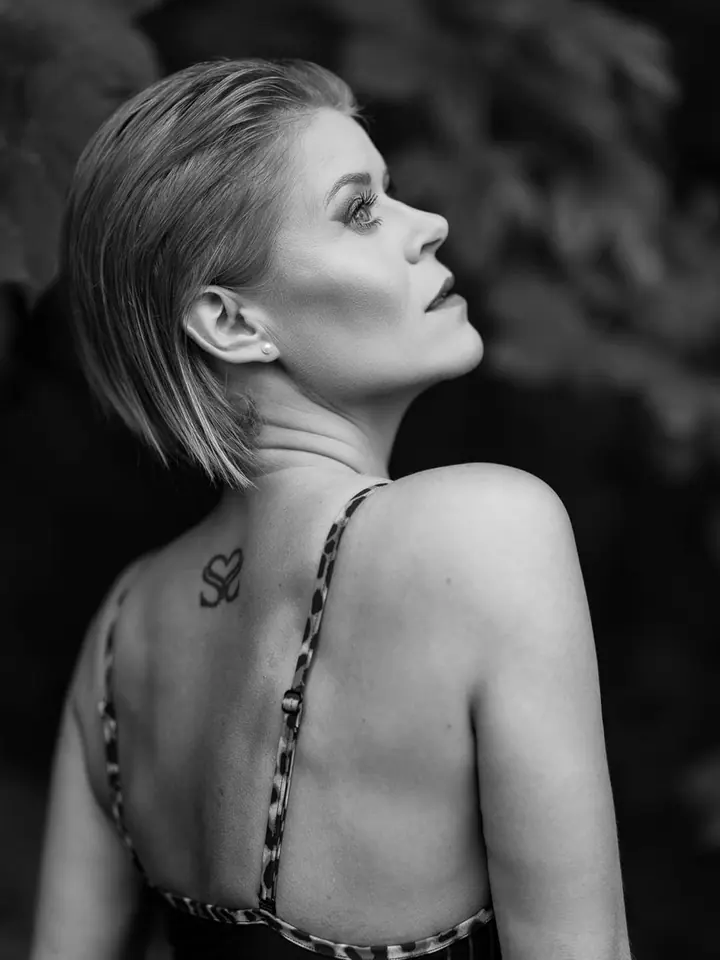

Vizáž a focení v ateliéru
Moje nejvyhledávanější služba. Udělám vám profesionální foto make-up a účes, společně vybereme oblečení a nafotíme portrét, na kterém vám to bude slušet.

Fotografka, vizážistka a stylistka
Jmenuji se Katka Ondrušková a jsem fotografka, vizážistka a stylistka z Rožnova pod Radhoštěm. Vytvořím vám make-up a účes na míru a pak vás nafotím v ateliéru nebo venku. Věřím, že každá žena může být nádherná, stačí najít a vyzdvihnout její přednosti.
Zeptat se na termín
Moje nejvyhledávanější služba. Udělám vám profesionální foto make-up a účes, společně vybereme oblečení a nafotíme portrét, na kterém vám to bude slušet.
Mám duši výtvarníka a tvorba vizáže a fotografování jsou mojí srdeční záležitostí. Ke každé z vás přistupuji jako k originálu. Nebudu z vás dělat někoho jiného, vizáž přizpůsobím vaší povaze, temperamentu a stylu.
Make-up propojuji se zkušenostmi kadeřnice, takže umím vytvořit účes, který se hodí k vašemu typu vlasů a dobře drží. Jsem členkou Asociace vizážistů a stylistů v ČR, kde jsem se naučila techniky otěruodolného a voděodolného make-upu. Tenká vrstva se sametovým povrchem působí přirozeně, jako pleť bez make-upu.
Kromě toho se už 13 let věnuji poradenství v oblasti podpory zdraví přírodní cestou a péče o pleť. Mým cílem je, abyste ode mě odcházela odpočatá, sebejistá a krásná a aby vám fotky dělaly radost i v těžších dnech.
Vyberte si balíček a napište mi přes formulář. Obratem se ozvu a termín doladíme po telefonu.
Přijďte s umytými vlasy bez laku a pár dní předem si nebarvěte vlasy ani obočí. Vezměte si více oblečení, světlé, tmavé i barevné kousky a oblíbené doplňky.
V ateliéru vám udělám profesionální foto make-up a upravím vlasy. Společně vybereme oblečení, ve kterém se budete cítit dobře.
Poradím vám s pózováním a nafotíme portrét v ateliéru nebo venku. Z náhledů si vyberete fotky, které vám upravím a pošlu v elektronické podobě.
Vůbec ne. Při focení vás uvolním a s pózováním vám poradím, takže se nemusíte ničeho bát.
Ve svém K-ateliéru v Rožnově pod Radhoštěm na Pivovarské 30. Fotit můžeme i venku, na louce, v kavárně nebo v uličkách města. Oblečení na focení venku spolu předem probereme po telefonu.
Obočí mějte upravené, ale netrhejte si ho těsně před proměnou. Nejsem kosmetička, takže tyto zákroky dělat nemohu.
Ano. Svatební vizáž začíná na 2500 Kč a svatební focení na 9900 Kč. Když si u mě objednáte focení, máte slevu 1000 Kč na vizáž. Zkoušku vizáže je dobré domluvit 2 až 4 měsíce před svatbou.